도쿄 스카이트리 (Tokyo Skytree)
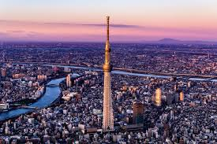
높이 634m의 일본 최고 높이 타워로, 전망대에서 도쿄 전경과 맑은 날에는 후지산까지 조망할 수 있습니다.
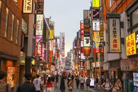
일본은 전통과 첨단 기술이 조화를 이루는 나라입니다. 신사와 사찰이 도심 속에 자리하고, 네온사인이 빛나는 번화가가 공존합니다. 질서를 중시하는 사회 분위기와 사계절의 아름다운 자연은 일본 여행의 큰 매력입니다.
일본의 수도이자 세계적인 대도시로, 전통과 현대 문화가 조화를 이루는 곳입니다.

높이 634m의 일본 최고 높이 타워로, 전망대에서 도쿄 전경과 맑은 날에는 후지산까지 조망할 수 있습니다.
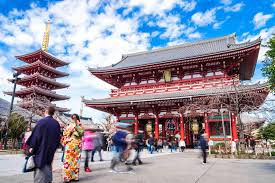
아사쿠사에 위치한 도쿄에서 가장 오래된 사찰로, 전통 상점가 나카미세도리가 유명합니다.
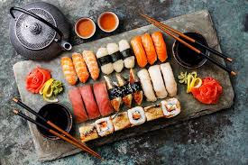
신선한 해산물을 사용한 일본 대표 요리로, 도요스 시장 인근에서 특히 유명합니다.
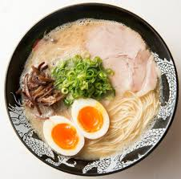
간장 베이스의 쇼유 라멘이 도쿄의 대표적인 스타일입니다.
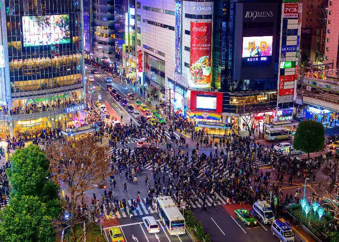
세계에서 가장 붐비는 횡단보도로, 도쿄의 활기를 상징하는 명소입니다.
애니메이션과 전자기기의 중심지로 일본 서브컬처를 체험할 수 있습니다.
천 년 이상 일본의 수도였던 도시로, 전통문화와 역사적 유산이 풍부합니다.
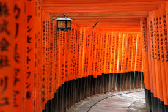
수천 개의 주홍색 도리이가 이어진 일본을 대표하는 신사입니다.
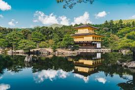
금박으로 장식된 유네스코 세계문화유산입니다.
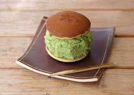
우지 말차로 만든 교토의 대표적인 디저트입니다.
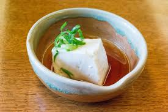
담백한 맛이 특징인 교토 전통 두부 요리입니다.
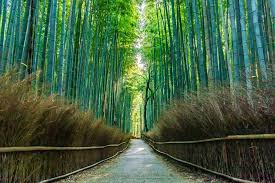
대나무가 빽빽하게 들어선 교토의 대표적인 자연 명소입니다.
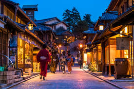
전통 목조 건물이 늘어선 교토의 대표적인 거리입니다.
홋카이도의 중심 도시로, 겨울 축제와 미식으로 유명합니다.
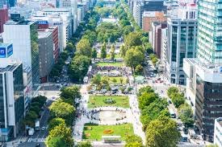
삿포로 눈축제가 열리는 도심 속 대표 공원입니다.
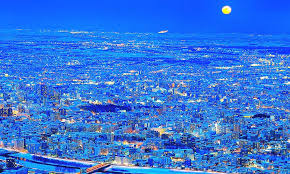
삿포로 최고의 야경을 감상할 수 있는 명소입니다.
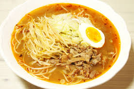
진한 된장 육수가 특징인 삿포로 대표 음식입니다.
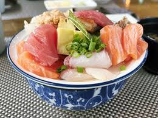
신선한 해산물을 올린 홋카이도의 대표 덮밥입니다.
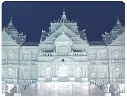
매년 2월 열리는 세계적인 겨울 축제입니다.
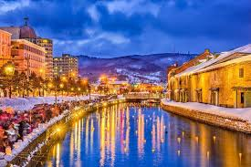
삿포로 근교의 낭만적인 항구 도시 명소입니다.